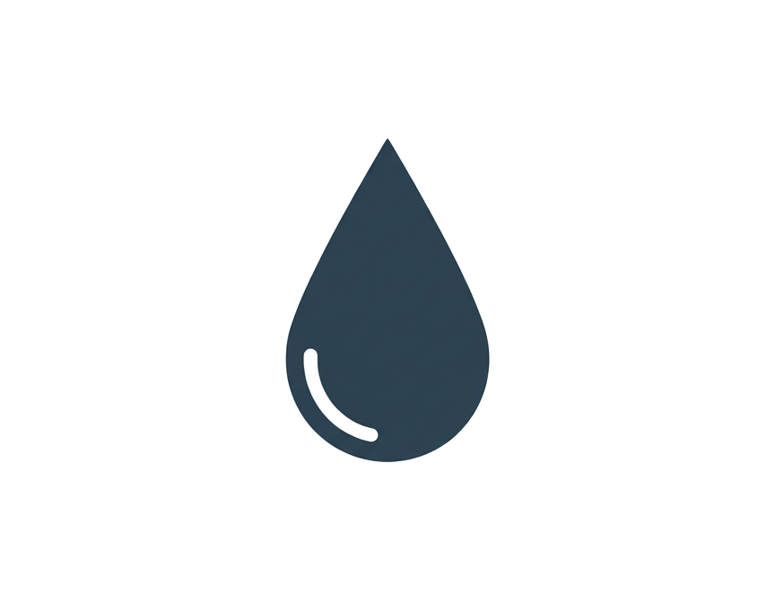

Середній рівень pH
7,3

Середня якість води
82%
Рівень забруднення
Оберіть регіон, щоб переглянути дані
про якість води у реальному часі
Хороший стан
Задовільний стан
Поганий стан
Середній рівень pH
Середня якість води
Рівень забруднення
Дані відображають середні показники pH та індексу якості води за останні 6 місяців.